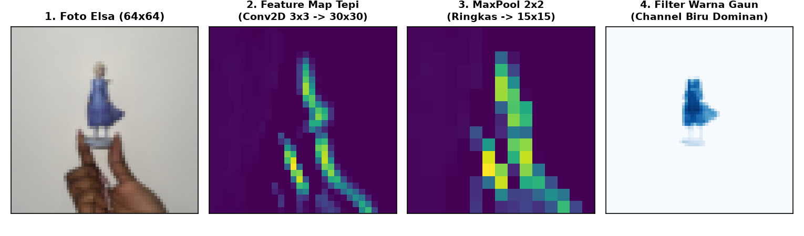
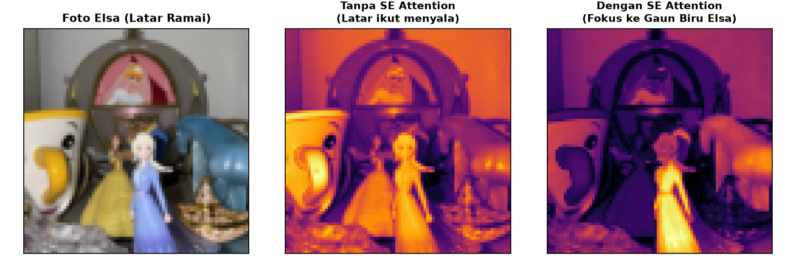
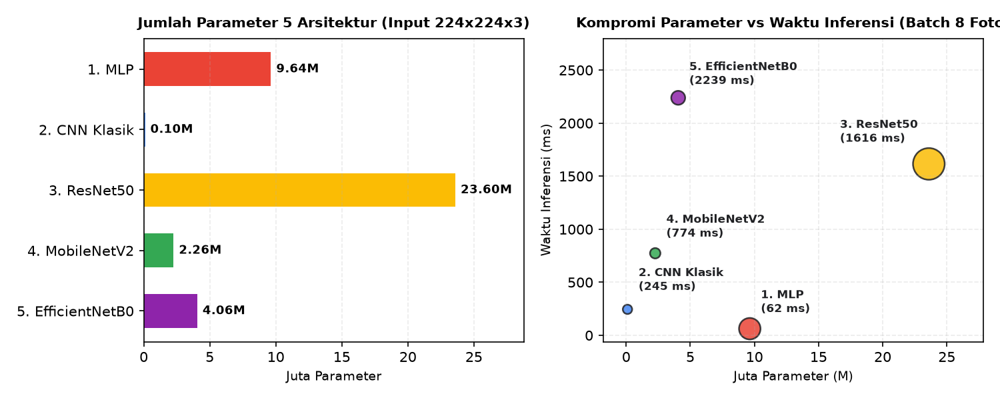

Fitur Khusus MLP: Kuat di Pola Non-Linear, Lemah di Gambar
FITUR KHUSUS UTAMA
1. Representasi Hidden Bertingkat
Kombinasi 2+ Hidden Layer + aktivasi ReLU mampu memisahkan pola berliku (non-linear boundary): h₂ = ReLU(W₂·ReLU(W₁x + b₁) + b₂).
2. Koneksi Semua-ke-Semua (All-to-All Dense)
Setiap fitur masukan bebas berinteraksi dengan fitur mana pun tanpa asumsi urutan ruang — sangat ideal untuk kolom tabel angka CSV.
3. Menjadi “Kepala” di Ekor Arsitektur Modern
Lapisan akhir Dense + Softmax di CNN, ResNet, maupun MobileNetV2 pada hakikatnya adalah blok MLP mini!
CACAT FATAL SAAT MEMBACA FOTO
1. Ledakan Parameter: 9,636,101 Param!
Hanya dengan 64 hidden neuron pada 224×224×3: layer ke-1 sendiri memakan 150.528 × 64 + 64 = 9.633.856 bobot!
2. Spatial Blindness (Lupa Tetangga 2D)
Jika karakter Elsa bergeser 2–8 piksel ke kanan atau kiri, seluruh piksel berpindah indeks — bobot terlatih kehilangan jejak!
Akibat Nyata di Proyek Frozen: Pada foto 48×48, MLP butuh 444.677 param tapi akurasi belajarnya macet di 22.2% (validasi 22.2%) → butuh CNN!
ARSITEKTUR #1 · SIMULASI FULL MLP
Simulasi MLP: Hidden Layer & Tes Geser 2 Piksel
Param: 9.636.101Elsa: 82%
Aliran Input Posisi Normal → Hidden → OutputPosisi Tepat
Ringkas: Pada posisi normal, bobot terlatih tepat mengenai piksel gaun biru Elsa (x4..x7).
Tahap 1 · Input Flatten (Koordinat Kaku)
Foto 224×224×3 diratakan menjadi 150.528 input tetap berdasarkan nomor koordinat.
Tahap 2 · Hidden Dense + ReLU
Setiap neuron terhubung ke semua 150.528 piksel — jumlah bobot melambung cepat.
Tahap 3 · Output Softmax (5 Kelas Frozen)
Skor keyakinan Elsa vs Anna/Olaf — langsung anjlok saat piksel objek bergeser ke kanan!
ARSITEKTUR #1 · USE CASE & RELEVANSI PROYEK
Kapan MLP Dipakai & Kenapa Bukan untuk Foto Frozen?
✓ SANGAT COCOK
1. Data Tabel (Tabular / CSV)
Prediksi harga rumah, skor kredit, atau deteksi penipuan dari kolom fitur numerik bebas urutan.
Luas | Kamar | Jarak → Harga
72m² | 3 | 2km → 850jt
90m² | 4 | 5km → 920jt
Aturan: Kolom tabel = jagonya MLP!
✓ COCOK DI UJUNG
2. Classification Head CNN
Menjadi lapisan penutup (Dense(64) → Dense(5)) setelah gambar diringkas konvolusi menjadi vektor ciri kecil.
Foto → CNN / MobileNet → GAP → MLP Head (5)
Aturan: Pakai sesudah ekstraksi ciri!
✕ HINDARI SEBAGAI BACKBONE
3. Foto Kamera (143 Foto)
Posisi figurin berubah-ubah & latar ramai (41 foto) membuat bobot MLP raksasa mudah terkecoh.
9,636,101 param Rentan geser & latar!
Aturan: Ganti input Flatten ke Conv2D!
VERDICT PROYEK FROZEN · MLP (GENERASI #1)
Hanya dijadikan pembanding awal (negatif kontrol) di Langkah 1 notebook & sebagai Head akhir. Untuk membaca piksel 2D, kita berevolusi ke CNN Klasik!
9.64M Param · Gagal Spasial
BAB 2 · ARSITEKTUR #2 (EVOLUSI SPASIAL)
CNN Klasik: Melihat dalam 2D
Menggantikan Flatten raksasa dengan Kernel 3×3 geser, Parameter Sharing, Stride, Padding, dan Pooling (generasi LeNet hingga VGG).
ARSITEKTUR #2 · PENJELASAN IN GENERAL
CNN Klasik: Ekstraksi Pola Bertingkat dari Foto 2D
2. CNN KLASIK (STACKED CONV+POOL)Aliran Tensor Data Frozen (5 Kelas Output)
Foto 224×224×3
Tetap Bentuk 2D!
→
Conv2D 3×3 + ReLU
Cari Tepi & Warna
→
MaxPooling 2×2
Ringkas Ukuran ÷2
→
Conv2D Dalam
Bentuk & Bagian
→
GAP + Dense(5)
Softmax 5 Kelas
Hasil Nyata Operasi Conv2D & MaxPool pada Foto Elsa (data/frozen_v1/)Total 3-Blok CNN: 101,829 Param (~95× lebih hemat dari MLP!)

Layer Awal Tepi & warna dasar
Layer Tengah Tekstur rambut & gaun
Layer Dalam Bagian kepala & tubuh
Head (GAP+Dense) Skor 5 Karakter Frozen
Kunci Revolusioner: CNN tidak memasang kabel terpisah per koordinat piksel, melainkan menggeser filter kecil yang sama (Kernel 3×3) ke seluruh foto → melahirkan Feature Map!
ARSITEKTUR #2 · FITUR KHUSUS (FONDASI CONVOLUTION)
4 Senjata Khusus CNN: Kernel, Stride, Padding & Pooling
1. Kernel 3×3 & Parameter Sharing
Kernel/Filter adalah kotak bobot kecil (3×3) pencari pola tepi/warna. Satu filter 3×3×3 cuma punya 27 bobot + 1 bias = 28 param, dipakai ulang menggeser seluruh foto!
1 Filter = 28 param (bukan 150.528×64 di MLP!)
2. Stride & Padding (Atur Dimensi Peta)
Stride (S) = langkah geser (S=1 rapat; S=2 loncat 2 → ukuran ÷2). Padding (P) = bingkai nol 0 di tepi gambar agar ukuran tepi tetap terjaga.
Output = (W − K + 2P) / S + 1 | (16−3+0)/1+1 = 14
3. MaxPooling 2×2 (Ringkas & Tahan Geser)
Di tiap kotak 2×2 pada Feature Map, ambil nilai terbesar (maksimum) saja → ukuran mengecil separuh & geseran 1px tidak mengubah nilai puncak!
14×14 → MaxPool 2×2 → 7×7 (tahan geser 1px!)
4. Receptive Field (Pandangan Makin Luas)
Semakin dalam melewati Conv2D + MaxPool, 1 piksel di Feature Map lapisan atas merangkum area luas di foto asli — dari tepi kecil ke wajah/gaun Elsa utuh!
Makin dalam = cakupan area foto makin luas!
ARSITEKTUR #2 · SIMULASI FULL CNN KLASIK (PIKSEL ELSA NYATA)
Use Case CNN Klasik & Kenapa Masih Perlu Berevolusi?
✓ SANGAT COCOK
1. OCR & Angka/Huruf (LeNet)
Membaca tulisan tangan kode pos, plat nomor kendaraan, dan gambar ikon berlatar bersih di perangkat ringan.
7
28×28 Polos Akurasi >99% cepat!
Aturan: Objek tunggal & latar bersih!
✓ SANGAT COCOK
2. Inspeksi Kualitas Pabrik
Mendeteksi goresan, retak, atau botol penyok di jalur konveyor dengan kamera & lampu terkendali.
Kamera Tetap → Conv 3 Blok → LOLOS / CACAT
Aturan: Sudut & latar seragam!
⚠ MENTOK SAAT DALAM (ERA VGG)
3. Foto Kompleks & Latar Ramai
Menumpuk >16–20 layer CNN polos seperti gaya VGG membuat sinyal training melemah & ekornya super berat!
VGG16 ~138M param Terkena Vanishing Grad!
Aturan: Butuh Skip Connection + GAP!
2 CACAT YANG MEMICU LAHIRNYA RESNET (#3)
(1) Vanishing Gradient / Degradation: gradien melemah saat melewati puluhan lapisan berturut-turut. (2) Kepala Flatten → Dense pada model gaya VGG masih menyedot puluhan juta parameter!
3-Blok CNN: 101,829 Param
CEK PEMAHAMAN · Q&A #1 (MLP VS CNN KLASIK)
Menghitung Dimensi Feature Map & Efisiensi CNN
Sebuah foto berukuran 28×28 diproses oleh layer Conv2D dengan Kernel 3×3, Stride = 1, dan Padding = valid (0). Berapa ukuran Feature Map yang dihasilkan?
A. 28×28 piksel (ukurannya tidak berubah)
B. 26×26 piksel ((28 − 3 + 0) / 1 + 1)
C. 14×14 piksel (langsung menyusut separuh)
Jawaban: B (26×26 piksel). Dengan rumus (W − K + 2P) / S + 1 = (28 − 3 + 0) / 1 + 1 = 26. Karena Padding valid tidak menambah bingkai nol di tepi, jendela 3×3 berkurang 2 langkah dari lebar awal. Opsi C baru terjadi jika setelahnya diberi MaxPooling 2×2.
BAB 3 · ARSITEKTUR #3 (TEROBOSAN JARINGAN DALAM)
ResNet: Residual Network
Menyelamatkan sinyal gradien dengan jalan pintas Skip Connection (F(x) + x), BatchNorm, dan Global Average Pooling.
ARSITEKTUR #3 · PENJELASAN IN GENERAL
ResNet: Jalan Pintas Agar Jaringan Dalam Tetap Tajam
3. RESNET (RESIDUAL BLOCKS + GAP)Aliran Tensor Data Frozen (5 Kelas Output)
Secara teori, 50 layer seharusnya ≥ 20 layer. Kenyataannya di CNN polos, semakin dalam tumpukan, error malah naik (Degradation Problem) karena sinyal error (gradien) melemah saat mundur.
Pada uji nyata Frozen dengan jumlah bobot kembar (24,373): Mini-ResNet menekan loss hingga 0.762 (vs 0.963) dan meraih akurasi validasi 2× lebih tinggi (22.9% vs 11.4%)!
Peran di Evolusi: Membuka pintu model sangat dalam (ResNet50/101) sekaligus menghapus borosnya Flatten lewat Global Average Pooling (GAP).
CNN Polos Dalam
Sinyal gradien habis di tengah & ekor Flatten 51.38M param.
ResNet (+x & GAP)
Jalur tol + x selamatkan gradien & GAP hemat 99.9% ekor.
Analogi Jalan Tol: Jalur pintas (Skip Connection) adalah jalur tol bebas hambatan di samping jalan tikungan — informasi asli x selalu selamat sampai tujuan!
ARSITEKTUR #3 · FITUR KHUSUS
3 Inovasi ResNet: Skip Connection, BatchNorm & GAP
INOVASI #1 · INTI
Skip Connection (y = F(x) + x)
Alih-alih memaksa layer menghafal ulang seluruh gambar dari nol, layer konvolusi cukup belajar residu/perubahan kecil F(x) yang ditambahkan ke input asli x.
Efek Praktis: Gradien error dari layer akhir dapat meloncat mundur langsung lewat garis + x tanpa mengecil jadi nol.
Output Blok = F(x) + x Saat Backprop, gradien mengalir langsung lewat +x!
INOVASI #2 · STABILISATOR
Batch Normalization (BN)
Menjaga skala angka aktivasi di setiap layer tidak terlalu besar atau mengecil ekstrem selama training. Efeknya: training jauh lebih cepat stabil dan tidak mudah macet.
Aturan Penting Transfer Learning: Saat evaluasi atau fine-tuning, BN memakai statistik beku agar angka prediksi tidak goyang.
Rata-rata ≈ 0, Sebaran ≈ 1 Penting di P07: base dipanggil training=False!
INOVASI #3 · PENGHEMAT HEAD
Global Average Pooling (GAP)
Mengganti Flatten → Dense yang boros: merata-ratakan tiap Feature Map7×7 menjadi 1 angka perwakilan per kanal.
Kenapa Efektif: Tanpa lapisan Dense(512) raksasa, model jauh lebih ringan dan tidak mudah overfitting di dataset kecil.
Simulasi ResNet: Plain Deep Net vs Skip Connection (+x)
Sinyal di Layer 1: 7% (Macet)Head: Flatten 51.38M
Kekuatan Sinyal Gradien Saat Backprop (L20 → L1)Vanishing Gradient!
Alur Sinyal & Ekor Arsitektur Saat Ini:
Tanpa jalur pintas, sinyal belajar yang dikirim dari Loss di Layer 20 habis terserap di tengah jalan sebelum mencapai Layer 1!
1. Blok Dalam (Layer 1 → Layer 20)TANPA +x
Setiap blok saat ini hanya menyalurkan jalur utama konvolusi F(x) tanpa penyambung + x. Saat backprop, sinyal gradien menyusut hingga tinggal 7% di Layer 1.
2. Ekor Arsitektur (Flatten vs GAP)FLATTEN 51.38M
Dengan cara lama (Flatten → Dense(512)), tensor 7×7×2048 diratakan menjadi 100.352 angka dan menghabiskan 51.380.229 parameter kepala!
HASIL KERAS NYATA (ResNet50 · 224×224×3)BENCHMARK ASLI
Use Case ResNet & Kenapa Belum Jadi Pilihan Utama Kita
✓ SANGAT COCOK
1. Citra Medis & Riset Server GPU
Deteksi pneumonia pada X-Ray paru atau klasifikasi sel mikroskopis di server rumah sakit yang memiliki GPU khusus & butuh akurasi tinggi tanpa batasan ukuran file 90 MB.
Skala Data: Ratusan ribu hingga jutaan citra berlabel.
Kenapa Andal di Server:
• 175 layer menangkap tekstur mikro halus.
• Stabil dilatih dengan GPU berkapasitas besar.
Syarat ideal: GPU Cloud / Server ≥ 8 GB VRAM
✓ BACKBONE STANDAR
2. Pembanding Akurasi (Benchmark)
Menjadi tolok ukur klasik di banyak jurnal ilmiah Computer Vision termasuk sebagai pembanding langsung ResNet50 vs MobileNetV2 di silabus proyek kita.
Fokus Uji: Seberapa besar selisih akurasi vs model ringan.
Catatan Training: Selalu panggil base BN dengan training=False.
Posisi di Proyek Frozen:
• Baseline pembanding akurasi di P06/P07.
• Menguji apakah model berat benar-benar perlu.
Peran: Pembanding akurasi & ukuran vs MobileNetV2
⚠ BERAT DI HP & DATA KECIL
3. Aplikasi Mobile / Dataset Mini
ResNet50 memiliki 23.60 juta parameter (~90.02 MB, latensi ~1616 ms / 8 foto CPU) karena konvolusi 3×3 standar tetap mahal dihitung!
Kecepatan: Lebih lambat di CPU / perangkat seluler.
Kapasitas: Mudah menghafal (overfitting) jika dataset mini.
Kendala di Edge / HP:
• File bobot 90.02 MB lambat diunduh di app.
• Terlalu besar untuk dataset 143 foto Frozen.
Solusi: Ganti konvolusi standar → Depthwise!
VERDICT PROYEK FROZEN · RESNET50 (GENERASI #3)
Digunakan sebagai pembanding benchmark, bukan model produksi akhir. Untuk mendapatkan kecerdasan ResNet dalam bodi 10× lebih ringan, lahirlah MobileNetV2!
23.60M Param · 90.02 MB
CEK PEMAHAMAN · Q&A #2 (RESNET)
Rahasia Skip Connection & GAP
Apa dua terobosan pada ResNet yang membuatnya bisa memiliki 50+ layer sekaligus menghindari ledakan jutaan parameter di bagian akhir sebelum Softmax?
A. Membuang fungsi ReLU dan memperbesar ukuran gambar ke 1024×1024
B. Menambahkan jalur pintas Skip Connection (F(x) + x) dan memakai Global Average Pooling (GAP)
C. Menghapus semua layer Conv2D dan kembali memakai Flatten → Dense
Jawaban: B. Skip Connection (F(x) + x) menjaga sinyal gradien tetap mengalir lancar saat jaringan sangat dalam (mencegah Vanishing Gradient), sedangkan GAP merata-ratakan setiap Feature Map menjadi 1 angka per kanal — memangkas parameter kepala dari 51,38 juta menjadi 10.245!
BAB 4 · ARSITEKTUR #4 & #5 (ERA EFISIEN MODERN)
MobileNetV2 & EfficientNet
Bagaimana merancang jaringan cerdas yang muat di HP, cepat dilatih di Google Colab, dan menjadi kandidat utama proyek Disney Frozen.
ARSITEKTUR #4 · PENJELASAN IN GENERAL (BINTANG PROYEK)
MobileNetV2: Kecerdasan CNN dalam Bodi Super Ramping
4. MOBILENETV2 (BACKBONE UTAMA PROYEK ★)Aliran Tensor Data Frozen (5 Kelas Output)
Foto 224×224×3
Skala [-1 s.d. 1]
→
Conv Awal 3×3
32 Channel Dasar
→
17× Inverted Residual
Depthwise + Linear
→
GAP (1280 Fitur)
Ringkas Vektor
→
Dropout + Dense(5)
Softmax Frozen
Kenapa Dunia Butuh MobileNetV2?
ResNet50 beratnya 90.02 MB (23.60M param) — lambat di HP dan terlalu kompleks untuk dataset kita yang berjumlah 143 foto.
MobileNetV2 memangkas beban menjadi hanya 2,264,389 parameter (8.64 MB!) dengan latensi ~2.1× lebih cepat di CPU.
Di Keras, backbone ImageNet MobileNetV2 sudah tersedia bawaan dan menerima input rentang nilai piksel [-1, +1] lewat preprocess_input.
ResNet50 (Generasi #3)
23.60M param · 90.02 MB · berat di CPU/HP.
MobileNetV2 (Generasi #4)
2.26M param · 8.64 MB · 10× lebih ramping!
Analogi Koki Spesialis: Daripada semua koki mencampur semua bahan sekaligus (Conv biasa), tiap koki cukup memotong 1 bahan dulu (Depthwise), lalu digabung ringan (Pointwise 1×1).
Bukti Hematnya Komputasi & Ukuran ModelDATA NYATA
GRAFIK KIRI · OPERASI BLOK
231.2M → 27.5M ops (Hemat 8.4×)
GRAFIK KANAN · UKURAN BOBOT
ResNet50 90.0 MB → MobV2 8.6 MB
ARSITEKTUR #4 · FITUR KHUSUS (SANDLER DKK., CVPR 2018)
3 Rahasia Rampingnya MobileNetV2
FITUR #1 · HEMAT 8.4×
Depthwise Separable Conv
Memecah Conv2D 3×3 biasa menjadi 2 langkah terpisah: (a) Depthwise 3×3 (tiap kanal difilter sendiri), lalu (b) Pointwise 1×1 untuk mengaduk hasilnya antarkanal.
Hasil Nyata: Kualitas peta fitur hampir setara Conv2D 3×3 penuh namun beban perkalian turun hampir 9 kali lipat.
231.2M ops → 27.5M ops (8.4× lebih ringan!)
FITUR #2 · POLA TERBALIK
Inverted Residual (Sempit-Lebar-Sempit)
ResNet menyempitkan kanal dulu sebelum conv. MobileNetV2 justru membaliknya: kanal input ramping (32) diperluas 6× (192) di dalam blok agar Depthwise kaya pola, lalu diperas kembali jadi 32.
Kenapa Unik: Jalur sempit menghemat RAM antar-blok, sementara ruang lebar 192 memberi keleluasaan memfilter pola Elsa & Olaf.
32 ch → Expand 192 ch → Project 32 ch (+Skip)
FITUR #3 · TANPA POTONG
Linear Bottleneck (Tanpa ReLU di Ujung)
Ketika data berdimensi 192 diperas kembali ke 32 kanal ramping, ReLU akan menghapus semua angka negatif dan membuang informasi berharga. Solusinya: lapisan terakhir blok tanpa ReLU (Linear)!
Efek di MobileNetV2: 17 blok project_BN di Keras sengaja langsung menuju penjumlahan Add() tanpa aktivasi ReLU pemotong.
Layer 1×1 Project = Linear (no ReLU!)
ARSITEKTUR #4 · SIMULASI FULL MOBILENETV2
Simulasi MobileNetV2: Conv Biasa vs Inverted Residual Block
Use Case MobileNetV2: Kenapa Jadi Jagoan Proyek Frozen?
✓ MOBILE & EDGE AI
1. Kamera HP Real-Time (TFLite)
Aplikasi identifikasi tanaman, kode QR pintar, atau klasifikasi mainan langsung di Android/iOS tanpa perlu mengirim foto ke server.
Contoh Nyata: Kamera Google Lens ringan, scanner struk, robotika mini.
Keunggulan Edge: Model 8.64 MB muat di cache aplikasi.
Kenapa Bisa Jalan Offline:
• Beban operasi 8.4× lebih ringan dari Conv biasa.
• Hemat baterai & RAM saat prediksi live.
Target: HP Android/iOS · Raspberry Pi · Web
✓ DATASET KECIL (143 FOTO)
2. Transfer Learning Data Terbatas
Hanya 2.26M param di backbone (17DepthwiseConv2D) + fitur ImageNet siap pakai → risiko overfitting jauh lebih rendah dibanding model 23M+ parameter!
Bekal ImageNet (P04): Sudah kenal tekstur kain, wajah, & warna dasar.
Input Standar: Normalisasi [-1, +1] via preprocess_input.
Cocok untuk 143 Foto Frozen:
• Kepala klasifikasi kecil (1.280 → 5 kelas).
• Tidak mudah menghafal latar polos/ramai.
Kunci: Generalisasi tinggi di dataset mini!
✓ RAMAH GOOGLE COLAB
3. Iterasi Cepat Saat Eksperimen
Hanya butuh ~8.64 MB dan latensi 773.5 ms/batch CPU, sehingga eksperimen skenario polos vs ramai di P05–P08 berjalan cepat.
Training Stabil: Cukup 15–20 epoch di Colab gratis.
Kompatibel Penuh: Mendukung Grad-CAM (P08) dengan peta akhir 7×7.
Alur Silabus P04–P08:
• P04/P06: Feature extraction (base beku).
• P07/P08: Fine-tuning & audit Grad-CAM.
Status: Pemenang Rasio Akurasi vs Kecepatan
VERDICT PROYEK FROZEN · PILIHAN UTAMA #1 ★
MobileNetV2 dipilih sebagai tulang punggung resmi proyek Klasifikasi Karakter Disney Frozen hingga P08 (Evaluasi & Grad-CAM)!
2.26M Param · 8.64 MB
ARSITEKTUR #5 · PENJELASAN IN GENERAL (GENERASI TERBARU DI KELUARGA EFISIEN)
EfficientNet: Menskalakan Model Secara Seimbang
5. EFFICIENTNET-B0 (MBCONV + SE ATTENTION)Aliran Tensor Data Frozen (5 Kelas Output)
Foto 224×224×3
Skala Terukur φ
→
Blok MBConv1/6
Warisan MobileNetV2
→
SE Attention
Bobot Fokus Kanal
→
GAP (1280 Fitur)
Vektor Karakter
→
Dense(5)
Softmax Frozen
Dari MobileNetV2 ke EfficientNet (Tan & Le, ICML 2019)
Setelah blok MobileNetV2 berhasil, peneliti bertanya: "Kalau saya ingin model sedikit lebih pintar lagi, apakah cukup menambah jumlah layer saja?"
Jawabannya tidak! Jika hanya memperdalam layer (Depth) tanpa memperlebar kanal (Width) dan memperjelas piksel foto (Resolution), model cepat jenuh.
EfficientNet menggabungkan blok MBConv (keturunan langsung Inverted Residual MobileNetV2) + Compound Scaling + perhatian kanal (SE Attention)!
KOMPOSISI B0 NYATA
4.06M param · 237 layers
GERBANG FOKUS
16 blok SE Attention Multiply
Analogi Lensa Zoom Seimbang: Memperbesar kamera tak cukup hanya menambah kaca (Depth), tapi juga bukaan cahaya (Width) dan kejernihan sensor (Resolution) bersamaan!
Efek SE Attention pada Foto Elsa Latar RamaiVISUAL FOKUS

Tanpa SE Attention
Cangkir Chip & latar di belakang Elsa ikut menyala terang (distraksi!).
Dengan SE Attention
Kanal gaun biru Elsa disorot fokus, sementara objek latar diredam otomatis.
ARSITEKTUR #5 · FITUR KHUSUS
3 Fitur Khusus EfficientNet: Compound Scaling & SE Attention
FITUR #1 · ATURAN SKALA
Compound Scaling (φ)
Menambah Kedalaman (Depth), Lebar Kanal (Width), dan Resolusi Input secara bersamaan dengan rasio tetap (B0 → B1 → B2 → B7) — bukan asal memperdalam saja!
Rumus Sederhana: Untuk sumber daya komputer 2φ lebih besar, naikkan ketiga dimensi secara proporsional agar tidak pincang.
Depth αφ · Width βφ · Resolution γφ
FITUR #2 · WARISAN #4
Blok MBConv (16 Depthwise)
Memakai blok Inverted Residual MobileNetV2 (Expand → Depthwise → Project + Skip), dilengkapi aktivasi halus Swish/SiLU yang sedikit lebih mulus dibanding ReLU.
Catatan Penting:EfficientNetB0 menerima piksel mentah [0, 255] karena layer rescaling-nya sudah built-in di dalam model Keras!
Keras B0: 237 layers · 9 Skip Add
FITUR #3 · FOKUS OBJEK
Squeeze-and-Excitation (SE)
Jaringan memberi skor kepentingan 0..1 di tiap kanal (Multiply): kanal gaun biru Elsa dikali besar (0.95), sementara kanal cangkir/dinding ramai diredam (0.12)!
Efek Nyata: Sangat membantu ketika objek Frozen berukuran kecil di tengah latar ruangan ramai.
Keras B0: 16 layer SE Multiply()
ARSITEKTUR #5 · SIMULASI FULL EFFICIENTNET
Simulasi EfficientNet: Compound Scaling & SE Channel Attention
4.06M Param · 15.47 MB
Bobot Perhatian Tiap Kanal pada Foto elsa_ramai.jpgSE OFF (Bobot Rata)
Visual Skala & Gerbang SE Gate Saat Ini:
Tanpa SE Attention, semua kanal (termasuk latar dinding dan cangkir di belakang Elsa) mendapat bobot setara.
Skala B0–B7: Mudah dinaikkan jika GPU tersedia lebih besar.
Keunggulan di Latar Ramai:
• Gerbang SE membantu abaikan objek pengganggu.
• Lebih hemat bobot 5.8× daripada ResNet50.
Ideal bila tersedia GPU untuk training & API
✓ PEMBANDING RESMI
2. Pembanding MobileNetV2 di Notebook
Sesuai PLAN.md, EfficientNetB0 (4.06M param, 15.47 MB) diuji berdampingan melawan MobileNetV2 untuk membuktikan alasan ilmiah pemilihan model!
Perbandingan Adil: Sama-sama punya arsitektur dasar MBConv.
Uji Eksperimen: Membuktikan apakah ekstra 16 blok SE sepadan.
Posisi di Proyek Frozen:
• Kandidat kuat upgrade jika foto ramai sulit.
• Baseline pembanding di P06/P07.
Peran: Runner-Up & Pesaing Utama MobileNetV2
⚠ TRADE-OFF EKSEKUSI
3. Batas Kecepatan CPU & Preprocessing
Pada uji CPU lokal kita (8 foto), EfficientNetB0 memakan 2238.9 ms vs 773.5 ms di MobileNetV2 (~2.9× lebih lambat) akibat banyaknya operasi cabang SE & aktivasi besar.
Total Layer: 237 layer vs 154 layer di MobileNetV2.
Input Unik: Bawaan [0, 255] (jangan salah double-scaling!).
Alasan Belum Jadi #1 Pemula:
• Ukuran file ~2× lebih besar & CPU ~2.9× lebih lambat.
• Lebih sensitif tuning saat dataset masih 143 foto.
Paling menjanjikan bila nanti ingin mengejar akurasi ekstra pada foto ramai, sementara MobileNetV2 menang mutlak di kesederhanaan, kecepatan, dan kestabilan transfer learning untuk pemula!
4.06M Param · 16 SE
SINTESIS BAB 1–4 · DATA BENCHMARK NYATA KERAS (INPUT 224×224×3)
Perbandingan Lengkap 5 Arsitektur + Posisi Model Modern
Arsitektur
Parameter
Ukuran
Latensi (8 foto)
Peran di Frozen
1. MLP (2 Hidden)
9,636,101
36.76 MB
62.3 ms
Kontrol Negatif (Buta Spasial)
2. CNN Klasik
101,829
0.39 MB
244.8 ms
Fondasi Conv2D + Pool
3. ResNet50
23,597,957
90.02 MB
1615.8 ms
Pembanding Berat (16 Skip)
4. MobileNetV2 ★
2,264,389
8.64 MB
773.5 ms
Backbone Utama Proyek
5. EfficientNetB0
4,055,976
15.47 MB
2238.9 ms
Runner-Up (16 SE Attention)
ATURAN PILIH · UTAMA
Pakai MobileNetV2 untuk baseline utama: ukuran 8.64 MB, cepat, & tahan overfit di 143 foto.
ATURAN PILIH · UPGRADE / BENCHMARK
Uji EfficientNetB0 & ResNet50 sebagai pembanding ilmiah akurasi latar ramai.
Catatan Lanskap Modern (Di Luar 5 Arsitektur Inti):Vision Transformer (ViT) memecah gambar jadi token layaknya teks (hebat jika dilatih jutaan foto, tapi mudah overfit di 143 foto tanpa pretraining raksasa), sedangkan YOLO khusus tugas Object Detection (kotak banyak objek sekaligus).
Grafik Trade-Off Benchmark KerasMEASURED
Kuadran Terbaik (Kiri-Bawah): Parameter ringkas + latensi cepat ditempati MobileNetV2 sebagai kompromi paling sehat.
CEK PEMAHAMAN · Q&A #3 (STUDI KASUS KEPUTUSAN)
Menjadi Konsultan: Pilih Arsitektur Terbaik
Untuk proyek klasifikasi 5 karakter Disney Frozen kita (dataset awal 143 foto polos vs ramai, akan dijalankan di Google Colab & bisa dipasang di HP), arsitektur mana yang paling seimbang dipilih?
A. MLP karena waktu inferensi per batch-nya paling cepat (62.3 ms)
B. ResNet50 karena jumlah parameternya paling besar (23.60M param)
C. MobileNetV2 karena ringan (2.26M param / 8.64 MB), cepat, dan tahan overfit pada data kecil
Jawaban: C (MobileNetV2). Kecepatan MLP (opsi A) tidak ada artinya karena ia kehilangan struktur 2D gambar, sementara ResNet50 (opsi B) terlalu berat dan rakus memori untuk dataset kecil. MobileNetV2 memberi rasio paling sehat antara akurasi spasial CNN + keringanan perangkat mobile!
JEMBATAN TEORI → PRAKTIK KODE
Siap Membuktikan Ke-5 Arsitektur Langsung di Keras?
Semua Angka di Slide Tadi Bisa Kamu Bangun & Uji Sendiri!
Dalam notebook P03_arsitektur_neural_network.ipynb (mode Visual-First, offline-safe dengan weights=None agar ringan dan cepat), kamu akan membuktikan 3 hal utama:
BUKTI #1 · LANGKAH 1–3
MLP vs Conv2D & CNN Klasik
Melihat langsung MLP 9.64M param dibanding CNN 101K param dan menyaksikan foto Elsa berubah menjadi Feature Map tepi!
Artefak Laporan Bab Metode! Tabel CSV + grafik kuadran ini bisa langsung dipakai sebagai bukti ilmiah saat mempertahankan pemilihan MobileNetV2!
P03_arsitektur_neural_network.ipynb
Shift+Enter
# Tahap 6 (# TODO 7 & 8): Benchmark 5 Arsitektur -> Simpan CSV & Grafik Kuadran
df_bench = kumpulkan_benchmark_5_arsitektur(daftar_5_model, batch_frozen_8) # TODO 7
out_csv = RESULTS_DIR / "p03_5_architectures_benchmark.csv"
df_bench.to_csv(out_csv, index=False) # TODO 8
plot_kuadran_5_arsitektur(df_bench, RESULTS_DIR / "p03_5_architectures_benchmark.png")
● OUTPUT VISUAL NYATA (DATA FROZEN v1)Hasil langsung di bawah sel

Output Notebook Step 6: Grafik Parameter & Kuadran Trade-off Parameter vs Waktu Inferensi dari 5 arsitektur Keras nyata.
MINI-CHALLENGE · STUDIO KEPUTUSAN ARSITEKTUR (6 MENIT)
Mini-Challenge: Tentukan Arsitektur Terbaik untuk 3 Kasus!
KASUS A · DATA TABELPrediksi Harga Rumah CSV
File CSV berisi 12 kolom angka (luas rumah, jumlah kamar, jarak stasiun, usia bangunan). Tidak ada data gambar 2D sama sekali.
Ciri: Data 1D tanpa piksel tetangga
KASUS B · SERVER GPURadiologi X-Ray Rumah Sakit
200.000 citra medis di server ber-GPU ganda; prioritas utama akurasi tekstur halus, ukuran model 90.02 MB bukan masalah.
Ciri: Data masif + GPU server besar
KASUS C · APLIKASI HPKamera Offline Frozen
143 foto 5 karakter Frozen (polos & ramai), akan dilatih di Colab gratis & dipasang di HP agar cepat mendeteksi langsung.
Ciri: Data mini + hemat RAM & waktu
Tugas Diskusi (6 Menit):
(1) Cocokkan arsitektur untuk Kasus A, B, C dari daftar [MLP, CNN Klasik, ResNet50, MobileNetV2, EfficientNetB0].
(2) Susun 3 kalimat draf "Alasan Ilmiah Memilih MobileNetV2" menggunakan angka nyata dari df_bench (param 2.26M, ukuran 8.64 MB, & latensi 773.5 ms).
Jawaban Tepat:
• Kasus A → MLP: Data tabular 1D tidak memiliki grid piksel spasial sehingga lapisan Fully-Connected Dense sudah tepat.
• Kasus B → ResNet50 (atau EfficientNet seri menengah): Tersedia GPU besar & ratusan ribu citra; Skip Connection menjaga akurasi layer dalam.
• Kasus C → MobileNetV2: Hanya 2.26M param (8.64 MB) berkat Depthwise Separable + Inverted Residual, cepat di CPU/HP, & siap Transfer Learning di P04!
GLOSARIUM RINGKAS · ARSITEKTUR NEURAL NETWORK
Kamus Istilah P03 (18 Istilah Asli)
🔍
BAB 1 · MLP (FULLY-CONNECTED)4 istilah
MLP
Multi-Layer Perceptron: jaringan dengan Hidden Layer penuh (Dense).
Hidden Layer
Lapisan neuron tersembunyi di antara Input dan Output.
Fully-Connected
Setiap neuron terhubung ke semua neuron lapisan sebelumnya.
Spatial Blindness
Hilangnya hubungan posisi piksel 2D akibat diratakan (Flatten).
BAB 2 · CNN KLASIK (CONVOLUTION)5 istilah
Kernel / Filter
Matriks angka kecil (misal 3×3) pencari pola tepi atau warna.
Parameter Sharing
Satu filter sama dipakai bergeser ke seluruh area foto (hemat bobot).
Stride & Padding
Panjang langkah geser filter (Stride) & bingkai nol di tepi (Padding).
MaxPooling
Mengambil nilai maksimum per kotak 2×2 agar ringkas & tahan geser.
Feature Map
Peta respons 2D hasil saringan sebuah filter konvolusi.
BAB 3 · RESNET (JARINGAN DALAM)4 istilah
Vanishing Gradient
Sinyal belajar mengecil/hilang saat melewati terlalu banyak layer.
Skip Connection
Jalur pintas (F(x) + x) agar gradien dan informasi awal tetap utuh.
BatchNorm
Penstabil sebaran nilai angka antar layer agar training mulus.
Global Avg Pooling
Merata-ratakan tiap peta fitur menjadi 1 angka (gantikan Flatten raksasa).
BAB 4 · MOBILENETV2 & EFFICIENTNET5 istilah
Depthwise Conv
Konvolusi 3×3 per kanal mandiri, diikuti Pointwise 1×1 pengaduk.
Inverted Residual
Pola sempit -> mengembang 6× -> sempit lagi di blok MobileNetV2.
Linear Bottleneck
Lapisan proyeksi sempit tanpa ReLU agar info tidak terpotong.
Compound Scaling
Menyeimbangkan Depth, Width, & Resolution bersamaan lewat skala phi.
SE Attention
Squeeze-and-Excitation: memberi bobot prioritas ke kanal fitur paling penting.
EVALUASI CEPAT · KUIS 1 / 5 (BAB 1 · MLP)
Mengapa MLP Kurang Ideal untuk Foto Frozen?
Soal 1Soal 2Soal 3Soal 4Soal 5
Saat foto Frozen 224×224×3 dimasukkan ke MLP dengan Hidden Layer Dense(64), apa kelemahan utamanya dibanding CNN?
A. Tidak bisa memakai fungsi aktivasi ReLU maupun Softmax
B. Flatten membuang posisi tetangga 2D & menghasilkan jutaan parameter (9.64M) yang rentan pergeseran
C. MLP tidak bisa menghasilkan 5 kelas probabilitas di output
Jawaban: B. MLP tetap mendukung ReLU & Softmax, tetapi keharusan meratakan gambar (Flatten) membuat bobot meledak ke 9.64 juta dan mengikat bobot pada posisi koordinat kaku.
EVALUASI CEPAT · KUIS 2 / 5 (BAB 2 · CNN KLASIK)
Menghitung Ukuran Feature Map & MaxPool
✓ Soal 1Soal 2Soal 3Soal 4Soal 5
Jika sebuah input berukuran 10×10 melewati Conv2D(Kernel=3×3, Stride=1, Padding=valid) lalu diteruskan ke MaxPooling2D(2×2), berapakah ukuran akhirnya?
A. 8×8 setelah Conv → 4×4 setelah MaxPool
B. 10×10 setelah Conv → 5×5 setelah MaxPool
C. 7×7 setelah Conv → 3×3 setelah MaxPool
Jawaban: A (8×8 → 4×4). Langkah Conv: (10 − 3 + 0) / 1 + 1 = 8×8. Lalu MaxPooling 2×2 membagi dua dimensi: 8 / 2 = 4×4.
EVALUASI CEPAT · KUIS 3 / 5 (BAB 3 · RESNET)
Mengapa ResNet Menambahkan + x?
✓ Soal 1✓ Soal 2Soal 3Soal 4Soal 5
Masalah utama apa yang berhasil dipecahkan oleh Skip Connection (y = F(x) + x) saat membangun arsitektur dalam puluhan layer?
A. Membuat ukuran file gambar JPEG otomatis terkompresi lebih kecil
B. Mencegah Vanishing Gradient / Degradation sehingga layer awal tetap mendapat sinyal belajar kuat
C. Menghilangkan kebutuhan akan fungsi Softmax di ujung model
Jawaban: B. Jalur pintas +x memberi jalan tol bagi gradien saat backpropagation maupun informasi awal ke layer dalam, terbukti di Frozen di mana Mini-ResNet mencapai akurasi validasi 2× Plain Deep Net!
EVALUASI CEPAT · KUIS 4 / 5 (BAB 4 · MOBILENETV2)
Mengapa MobileNetV2 Jauh Lebih Ringan?
✓ Soal 1✓ Soal 2✓ Soal 3Soal 4Soal 5
Tiga ciri arsitektur manakah yang membuat MobileNetV2 hanya berbobot 2.26M param (hemat ~8.4× hitungan dibanding konvolusi biasa)?
A. Membuang semua layer konvolusi dan menggantinya dengan Dense layer
B. Depthwise Separable Convolution + Inverted Residual (Expand 6×) + Linear Bottleneck
C. Menggunakan kernel raksasa 11×11 di seluruh lapisan model
Jawaban: B. Memisahkan filter spasial per kanal (Depthwise) dan pengadukan kanal (Pointwise 1×1) memotong perkalian secara drastis, sementara Linear Bottleneck menjaga informasi di jalur sempit tanpa terpotong ReLU.
Apa peran Compound Scaling (φ) dan Squeeze-and-Excitation (SE) pada arsitektur EfficientNet?
A. Compound Scaling menyeimbangkan Depth, Width, & Resolusi bersamaan; SE Attention memberi bobot ekstra pada kanal ciri penting
B. Keduanya berfungsi untuk menghapus seluruh label kelas pada metadata.csv
C. EfficientNet tidak memakai konvolusi sama sekali melainkan Self-Attention penuh seperti ViT
Jawaban: A. EfficientNet masih berbasis blok konvolusi (MBConv turunan MobileNetV2), lalu ditingkatkan secara seimbang lewat Compound Scaling dan dipasangi SE Attention agar kanal ciri objek menonjol di atas latar ramai.